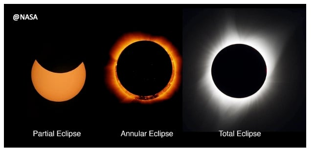
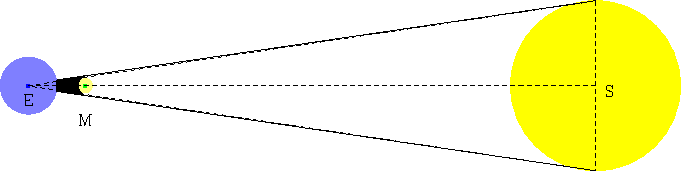
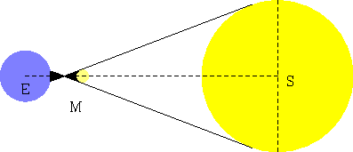
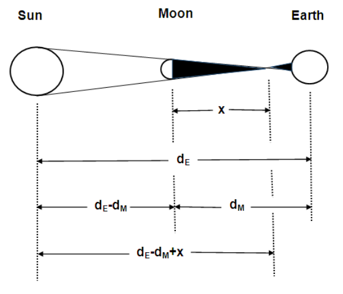
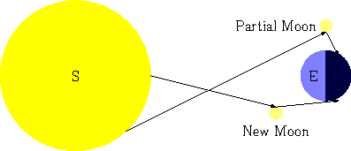
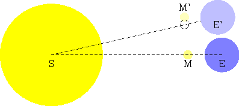
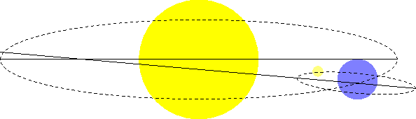
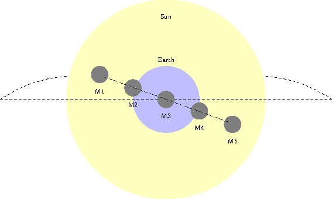

We are looking for authors in StatWizard blog!
If you've got an interesting story to tell about statistics, mathematics and related fields, reach out to us at admin@statwizard.in
Cover image taken from NASA
Summary: Introduction On April 8, 2024, the people in Texas, United States of America, will watch a cosmic event taking place before their very rise, a total solar eclipse. Well, if you’re not a believer in the myths of asuras named Rahu and Ketu, then for you a solar eclipse occurs when the shadow of the moon falls directly on a location on the Earth, and the moon obstructs our view of the Sun.
On April 8, 2024, the people in Texas, United States of America, will watch a cosmic event taking place before their very rise, a total solar eclipse. Well, if you’re not a believer in the myths of asuras named Rahu and Ketu, then for you a solar eclipse occurs when the shadow of the moon falls directly on a location on the Earth, and the moon obstructs our view of the Sun. Since the sun’s rotation, the moon’s rotation, and the Earth’s rotation details are all known to astronomers, it is kind of a deterministic mathematical problem to figure out when they are going to line up together. In this problem, we are going to dive deep into this mathematics, and try to figure out when these eclipses occur, and try to predict the future date of eclipses.
Before we submerge ourselves into the mathematical jargon, here’s a brief background on solar eclipses. There are 3 kinds of solar eclipses:
Here’s a picture of three different types of eclipses from NASA.

To have an eclipse, the sun and the moon both have to align with the Earth. However, most of the time, this alignment happens with some approximation error, so we get partial eclipses for most of the time. In case the alignment happens, we get either the total eclipse or the annular eclipse. Among these two, total solar eclipse is rarer. This is because even if the Sun is so far away from us, its significant size makes it extremely difficult for the small moon to entirely cover it. This usually happens when the Earth is the most distant from the Sun in its orbit and the Moon is in the perigee, the nearest to the Earth in its orbit.
This perfect alignment is indeed very rare, and even rarer is to be able to see this from the same location on the Earth. For instance, the last total solar eclipse that India has seen was on July 22, 2009 (about 15 years ago) and the next total solar eclipse in India will be seen on March 20, 2034 (about 10 years from now).
It is astonishing to me that such rare events happening 10 years into the future can be predicted precisely to the exact date and time. In fact, NASA’s computers can calculate these total solar eclipses using thousands of cosmological variables for about 100 years into the future, down to the precise second. In this post, we are going to touch upon the basis of these complex calculations slightly, to get a taste of it. NASA’s math challenges1 are a great way to have some hands-on exercises about this, after you complete this post.
Before moving on to the calculations, let us introduce some notations.
The first set of alignment happens when the light rays from the edge of the Sun hit the moon before hitting the Earth, so the moon’s shadow blocks the Sun from view. This can happen in two ways: The light rays directly reach the Earth,

or it has a crossover before reaching the Earth.

Let the crossover happen at $x$ distance away from the center of the Moon towards the center of the Earth. Then, by the properties of similar triangle, we must have
$$ \dfrac{r_M}{r_S} = \dfrac{x}{d_E - d_M + x} $$

This translates to
$$ \begin{align*} & r_M (d_E - d_M + x) = r_S x \\ \implies & r_M (d_E - d_M) = (r_S - r_M) x\\ \implies & x = \dfrac{r_M (d_E - d_M)}{r_S - r_M} \end{align*} $$
Now, it is known that the Moon’s diameter is $27.25%$ of the Earth’s diameter and Sun’s diameter is about $109$ times the Earth’s diameter. This solves to
$$ \begin{align*} x & = \dfrac{0.2725 r_E}{(109 - 0.2725)r_E} (d_E - d_M)\\ & = 0.00250626566 (d_E - d_M) \end{align*} $$
Now a total solar eclipse only happens in the first situation when there is no crossover. This is because, during the time of the crossover, the light rays from the edge of the sun can still come to us, resulting in an annular solar eclipse, instead of a total solar eclipse. To ensure that the second case does not happen, we require $x$ to be as large as $d_M - r_E$ (i.e., the crossover is expected to happen somewhere inside the earth’s core).
Hence, the first alignment condition for a total solar eclipse is that
$$ d_M - r_E < 0.00250626566 (d_E - d_M) $$
If we start with the previous condition, we have
$$ 1.00250626566 d_M < 0.00250626566 d_E + r_E $$
which tells that the distance to the Moon from the Earth must be less than a predefined value. Hence, to have a total solar eclipse, it makes sense to consider the situation when the Moon is the closest to the Earth, i.e., in its perigee.
It takes $27.554550$ days for the Moon to complete one full rotation around the Earth, so it takes that many days after a perigee to occur another perigee. This is often called an anomalistic month (i.e., perigee to perigee).
To have a solar eclipse, as we understand from the previous figures, will happen only when the Moon is between the Sun and the Earth. This means, that on the opposite side of the Earth where there is night, one cannot see the Moon at all, since it must be on the side of Earth that is facing the Sun.

Therefore, the solar eclipse must be on a New Moon day. Now we know that a lunar month (i.e., the time it takes for the Moon to complete all its phases) is $29.530589$ days. So this is another alignment condition that must be true for a solar eclipse to happen.
To see why a lunar month is bigger than the anomalistic month of 27 and a half days, consider the following: When an anomalistic month happens, the moon takes a full circle around the Earth. But the Earth is not fixed, it is also moving around the Sun. So during this time, the Earth also moves a bit forward, hence the moon has to circle around a bit more so that the Sun, Moon, and Earth align in a straight line.

To figure this out, we will use Keplar’s law, which says that the angular velocity of these celestial bodies must be uniform.
This is very close to the actual value of $29.530589$ days with just $0.35%$ error.
So far, we have been treating these celestial objects as if they were two-dimensional. However, they are actually 3-dimensional objects. In viewing the 3D space, we find another alignment condition that the Moon, the Earth and the Sun must be on the same plane during the time of solar eclipse. But, the plane on which the Moon orbits around the Earth is tilted about $5.145^{\circ}$ from the plane on which the Earth orbits around the Sun.2

Therefore, the straight line alignment can only happen when the Moon is at a nodal position i.e., the point where the Moon’s orbital plane intersects the Earth’s orbital plane. To see this more clearly, think of the following picture as a diagram from how it would look if you are an observer looking at the movement of Earth, Sun and the Moon from the side.

During the rotation of the moon, it moves from position $M1$ to $M5$ and then vice-versa. Only the position $M3$ is where the Moon can directly obstruct the view of the Sun as seen in the solar eclipse. This particular position $M3$ is called a node, and the time it takes for the Moon to move from one node to another node is called a draconic month, given by $27.212221$ days.
Notice that it is very close to an anomalistic lunar month (i.e. 27 and a half days), since a complete full circle around the Earth would imply the Moon would cross the nodal position twice in its movement. If everything else is fixed, the anomalistic lunar month would be exactly equal to the draconic month, since both would imply a full circle of the Moon around the Earth. However, due to the strong gravitional pull of the Sun, the orbital plane of the Moon itself shifts slightly, hence the position of the nodes also changes slightly as the Moon orbits around the Earth. This casues a different of approximately $0.3$ days or $7.5$ hours.
We noticed that there are three periodic alignment conditions (Alignment 2, 3, and 4) that must occur all at once for a solar eclipse to happen. Now remember the least common multiple that you have learned in your childhood, and consider the following:
Therefore, if a total solar eclipse were to happen today, after approximately $6585.35$ days (i.e., $18$ years $11$ days $8$ hours), we would have a very similar alignment condition triggering another solar eclipse of the same nature. However, since there is a gap of $8$ hours, it may mean the same location would not have this solar eclipse alignment during the day, so a total solar eclipse, although occurs, will not be visible.
Hence, we can multiply this by 3, and obtain a common period of $54$ years and $34$ days.
Therefore, if on April 8th, 2024, we see a total solar eclipse, we will see another one on May 11th, 2078, which will be seen from the same area of Texas, United States of America. Again, don’t take my word for me, you can go ahead and verify it with the chart published on Wikipedia3.
In conclusion, exploring the math behind solar eclipses reveals a prediction mechanism for future solar eclipses. You simply need to record all the eclipses that happen in a $54$ year span, and then it can provide you a list of solar eclipses that are going to happen in the future, $100$ or $200$ years from now.
However, we only considered a very simplistic setup of the solar system. There are hundreds of stars, and planets that all exert gravitational pull on the Earth, Moon, and the Sun. These hundreds of factors play a crucial role in creating the spectacle we witness. So when we make a very long-term prediction like $200$ years or further into the future, there are bound to be errors of magnitude of a day or more.
Along with that, due to the expansion of the universe and the Sun’s gravitational pull, the Moon is moving away from us about 3.8 centimeters per year. This means, after a significant period of time, the first alignment condition won’t be true, hence from then onwards, all the solar eclipses will only be annular in nature4. On the other hand, thousands of years into the past, the Moon was so close to us that every solar eclipse resulted in a total solar eclipse. Thus, we are incredibly lucky to be alive in a time when we can observe in awe both the annular and total solar eclipses through the rare alignment of these celestial bodies.
NASA Total Eclipse Math Challenges: https://eclipse2017.nasa.gov/math-challenges ↩︎
NASA Eclipes and the Moon’s Orbit: https://eclipse.gsfc.nasa.gov/SEhelp/moonorbit.html ↩︎
List of Solar Eclipses of 21st Century: https://en.wikipedia.org/wiki/List_of_solar_eclipses_in_the_21st_century ↩︎
Total Solar Eclipses will someday be impossible, here’s why - Kasha Patel, Washington Post. URL: https://www.washingtonpost.com/climate-environment/2024/01/05/total-solar-eclipse-moon/ ↩︎